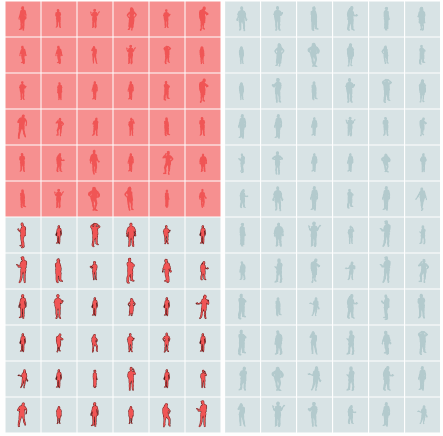

Modeling College GPA
Let's pretend we're college admissions officers trying to predict the GPA students will have in college (in these examples we'll use simulated data).
One simple approach: predict that students will have the same GPA in college as they did in high school.
This is at best a very rough approximation, and it misses a key feature of this data set: students usually have better grades in high school than in college
We're  over-predicting college grades more often than we under-predict.
over-predicting college grades more often than we under-predict.
Predicting with ML
If we switched to using a machine learning model and entered these student grades, it would recognize this pattern and adjust the prediction.
The model does this without knowing anything about the real-life context of grading in high school versus college.
Giving the model more information about students increases accuracy more...
...and more.
Models can encode previous bias
All of this sensitive information about students is just a long list of numbers to model.
If a sexist college culture has historically led to lower grades for female students, the model will pick up on that correlation and predict lower grades for women.
Training on historical data bakes in historical biases. Here the sexist culture has improved, but the model learned from the past correlation and still predicts higher grades for men.
Hiding protected classes from the model might not stop discrimination
Even if we don't tell the model students' genders, it might still score female students poorly.
With detailed enough information about every student, the model can still synthesize a proxy for gender out of other variables.
Including a protected attribute may even decrease discrimination
Let's look at a simplified model, one only taking into account the recommendation of an alumni interviewer.
The interviewer is quite accurate, except that they're biased against students with a low household income.
In our toy model, students' grades don't depend on their income once they're in college. In other words, we have biased inputs and unbiased outcomes—the opposite of the previous example, where the inputs weren't biased, but the toxic culture biased the outcomes.
If we also tell the model each student's household income, it will naturally correct for the interviewer's overrating of high-income students just like it corrected for the difference between high school and college GPAs.
By carefully considering and accounting for bias, we've made the model fairer and more accurate. This isn't always easy to do, especially in circumstances like the historically toxic college culture where unbiased data is limited.
And there are fundamental fairness trade-offs that have to be made. Check out the Measuring Fairness explorable to see how those tradeoffs work.

Adam Pearce // May 2020
Thanks to Carey Radebaugh, Dan Nanas, David Weinberger, Emily Denton, Emily Reif, Fernanda Viégas, Hal Abelson, James Wexler, Kristen Olson, Lucas Dixon, Mahima Pushkarna, Martin Wattenberg, Michael Terry, Rebecca Salois, Timnit Gebru, Tulsee Doshi, Yannick Assogba, Yoni Halpern, Zan Armstrong, and my other colleagues at Google for their help with this piece.